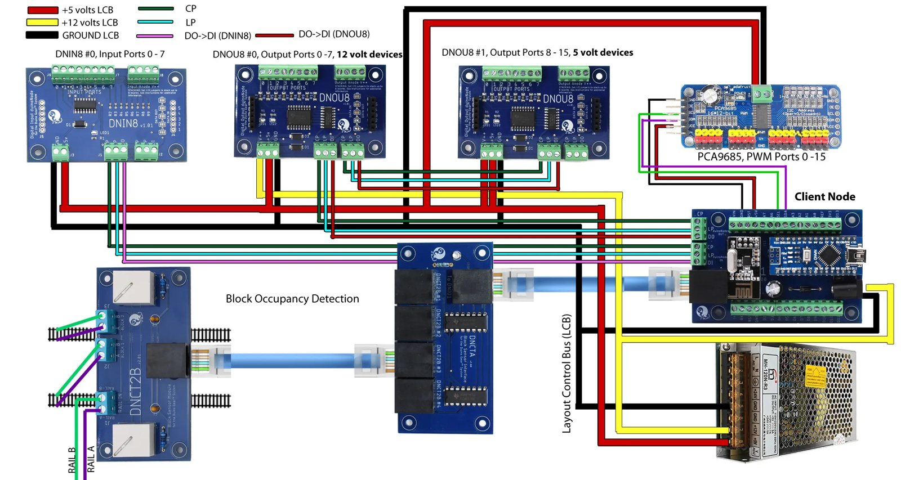

Behind the Scenes

How the layout works when the crews aren't looking: the radios under the layout, the signals, the software that decides which cars move, and how AI helped with all of it.
The Build
HART fills one room. The track plan settled in July 2025: the benchwork footprint, old maps of the island laid over it to place the yards and plants, then the main line, the yard on the peninsula and the helix down to staging. Crews already run sessions on the railroad while construction goes on around them. See the build photos, month by month, and the track plans and wiring diagrams.
Finished
The staging level
The lower level, at the bottom of the helix. It is finished, and trains already run on it.
Complete
The helix
A spiral of track that lets trains change levels in a small space: the construction plan and every printed fixture.
Drawn to scale
The track plan
The staging, main and upper levels from the layout plan, with switch positions, the test loop and block lengths.
Framing and cut sheets
The main level
Framing drawings, plywood cut sheets and a lumber cut list. Work resumes after Thanksgiving.
Artificial Intelligence
AI has worked on nearly every part of this railroad: the research, the benchwork, the electronics, the signals, the paperwork and the locomotives. The Diverging Route catalogues those jobs topic by topic: what I asked for, which tool did it, what came out, and how well it went. The sections below follow its electronics, signals and operations topics; the locomotives are in The Diverging Route.
Article · October 2026
Bringing the railroad together
How AI grew up alongside the railroad, from the first research to the way the software, research and website were organised by October 2026.
Guide · November 2026
Inside the repository
How the repository is laid out: the folders, where each fact lives, the shared code and submodules, and how a change reaches the layout and this website.
Article · November 2026
Speed matching CSX 2121 and 2738
How AI timed both locomotives over the detection blocks and corrected 2738's decoder to match 2121: the results, and every recorded run with its readings and speed curves.
Article · Side project
STL Studio: building Tower LCC+Q logic with blocks
A free web editor I built for the LCC community: snap blocks together and copy the logic into an RR-CirKits Tower LCC+Q. Not part of HART's control system.
Plugin · GitHub
model-railroad-skills
Skills for Claude Code on JMRI panels, signals, the Dispatcher System, MQTT, CATS and STS, each rule checked against the program's source. Two separate plugins in it manage Operations Pro and print car cards from photos.
Tool · GitHub
JMRI roster to the CS-105
Copies the JMRI roster into a TCS CS-105 command station, names and function labels included, so LCC throttles list every locomotive.
Electronics
Switch motors, detectors and signal lamps are wired to small radio nodes near the track they serve. An Arduino listens to those radios and passes everything on to the computer.
Overview
LCOS and the Arduino bridge
The radio nodes, what each one is wired to, and how their messages reach JMRI.
Reference
Device roster
Every switch, signal and sensor on the railroad, searchable, with its control point and hardware.
Reference
Wiring viewer
Each radio node pin by pin: which output lights each signal lamp, throws each switch, or reads each detector.
Drawings
Layout documentation
Track buses, power districts, bus wiring, how a control node and a turnout are hooked up, and where the nodes sit.
Control & signals
A computer running JMRI, free model railroad software, knows where every switch is lined and which track is occupied. The dispatcher sets up routes on a CTC panel on screen, and the signals in the aisle follow.
Overview
How the signals work
From the dispatcher's click to a green light in the aisle, and what the signals do when nobody is dispatching.
Under the hood
What we added to JMRI
The scripts and files we add to a stock JMRI install, and how control of the signal lamps passes between JMRI and the field.
Under the hood
The tables file
One XML file holds every block, switch, signal and route JMRI knows. How it is laid out, a browser for every table, and how the parts link.
Overview
How the dispatcher panels grew
Both CTC panels and the Layout Editor panel underneath them, redrawn step by step from the first draft to the finished board.
Operations & car forwarding
Cars don't move at random. Each session starts from shipper orders. STS, the Shipper-driven Traffic Simulator, fills them with cars from the roster and produces the waybills and switch lists the crews work from, and JMRI Operations Pro keeps a copy for the trains and desks.
Article · July 2026
Setting up car movement on the HART Railroad
From Post-it flags to STS: car cards and waybills, a track scale for the coke hoppers, and hundreds of simulated sessions to tune the traffic.
Article · Operations Pro plugin
The Operations Pro plugin
A plugin that sets up, checks and explains a JMRI Operations Pro railroad, the invented railroad it built as its own test, and a 43-case walkthrough to follow.
Article · car-cards plugin
The car cards plugin
A free plugin that turns phone photos of your cars and locomotives into printed car cards, with a review page to check every number first.
In Operations
Car cards & waybills
The cards made from photos of each car, and how crews use them in a session.